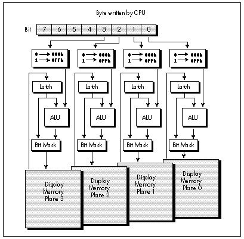

| Previous | Table of Contents | Next |
In the last chapter, we learned about the markedly peculiar write mode 3 of the VGA, after having spent three chapters learning the ins and outs of the VGA’s data path in write mode 0, touching on write mode 1 as well in Chapter 23. In all, the VGA supports four write modes—write modes 0, 1, 2, and 3—and read modes 0 and 1 as well. Which leaves two burning questions: What is write mode 2, and how the heck do you read VGA memory?
Write mode 2 is a bit unusual but not really hard to understand, particularly if you followed the description of set/reset in Chapter 25. Reading VGA memory, on the other hand, can be stranger than you could ever imagine.
Let’s start with the easy stuff, write mode 2, and save the read modes for the next chapter.
Remember how set/reset works? Good, because that’s pretty much how write mode 2 works. (You don’t remember? Well, I’ll provide a brief refresher, but I suggest that you go back through Chapters 23 through 25 and come up to speed on the VGA.)
Recall that the set/reset circuitry for each of the four planes affects the byte written by the CPU in one of three ways: By replacing the CPU byte with 0, by replacing it with 0FFH, or by leaving it unchanged. The nature of the transformation for each plane is controlled by two bits. The enable set/reset bit for a given plane selects whether the CPU byte is replaced or not, and the set/reset bit for that plane selects the value with which the CPU byte is replaced if the enable set/reset bit is 1. The net effect of set/reset is to independently force any, none, or all planes to either of all ones or all zeros on CPU writes. As we discussed in Chapter 25, this is a convenient way to force a specific color to appear no matter what color the pixels being overwritten are. Set/reset also allows the CPU to control the contents of some planes while the set/reset circuitry controls the contents of other planes.
Write mode 2 is basically a set/reset-type mode with enable set/reset always on for all planes and the set/reset data coming directly from the byte written by the CPU. Put another way, the lower four bits written by the CPU are written across the four planes, thereby becoming a color value. Put yet another way, bit 0 of the CPU byte is expanded to a byte and sent to the plane 0 ALU (if bit 0 is 0, a 0 byte is the CPU-side input to the plane 0 ALU, while if bit 0 is 1, a 0FFH byte is the CPU-side input); likewise, bit 1 of the CPU byte is expanded to a byte for plane 1, bit 2 is expanded for plane 2, and bit 3 is expanded for plane 3.
It’s possible that you understand write mode 2 thoroughly at this point; nonetheless, I suspect that some additional explanation of an admittedly non-obvious mode wouldn’t hurt. Let’s follow the CPU byte through the VGA in write mode 2, step by step.
Figure 27.1 shows the write mode 2 data path. The CPU byte comes into the VGA and is split into four separate bits, one for each plane. Bits 7-4 of the CPU byte vanish into the bit bucket, never to be heard from again. Speculation long held that those 4 unused bits indicated that IBM would someday come out with an 8-plane adapter that supported 256 colors. When IBM did finally come out with a 256-color mode (mode 13H of the VGA), it turned out not to be planar at all, and the upper nibble of the CPU byte remains unused in write mode 2 to this day.
The bit of the CPU byte sent to each plane is expanded to a 0 or 0FFH byte, depending on whether the bit is 0 or 1, respectively. The byte for each plane then becomes the CPU-side input to the respective plane’s ALU. From this point on, the write mode 2 data path is identical to the write mode 0 data path. As discussed in earlier articles, the latch byte for each plane is the other ALU input, and the ALU either ANDs, ORs, or XORs the two bytes together or simply passes the CPU-side byte through. The byte generated by each plane’s ALU then goes through the bit mask circuitry, which selects on a bit-by-bit basis between the ALU byte and the latch byte. Finally, the byte from the bit mask circuitry for each plane is written to that plane if the corresponding bit in the Map Mask register is set to 1.

Figure 27.1 VGA data flow in write mode 2.
|
It’s worth noting two differences between write mode 2 and write mode 0, the standard write mode of the VGA. First, rotation of the CPU data byte does not take place in write mode 2. Second, the Set/Reset and Enable Set/Reset registers have no effect in write mode 2. |
Now that we understand the mechanics of write mode 2, we can step back and get a feel for what it might be useful for. View bits 3-0 of the CPU byte as a single pixel in one of 16 colors. Next imagine that nibble turned sideways and written across the four planes, one bit to a plane. Finally, expand each of the bits to a byte, as shown in Figure 27.2, so that 8 pixels are drawn in the color selected by bits 3-0 of the CPU byte. Within the constraints of the VGA’s data paths, that’s exactly what write mode 2 does.
By “the constraints of the VGA’s data paths,” I mean the ALUs, the bit mask, and the map mask. As Figure 27.1 indicates, the ALUs can modify the color written by the CPU, the map mask can prevent the CPU from altering selected planes, and the bit mask can prevent the CPU from altering selected bits of the byte written to. (Actually, the bit mask simply substitutes latch bits for ALU bits, but since the latches are normally loaded from the destination display memory byte, the net effect of the bit mask is usually to preserve bits of the destination byte.) These are not really constraints at all, of course, but rather features of the VGA; I simply want to make it clear that the use of write mode 2 to set 8 pixels to a given color is a rather simple special case among the many possible ways in which write mode 2 can be used to feed data into the VGA’s data path.
Write mode 2 is selected by setting bits 1 and 0 of the Graphics Mode register (Graphics Controller register 5) to 1 and 0, respectively. Since VGA registers are readable, the correct way to select write mode 2 on the VGA is to read the Graphics Mode register, mask off bits 1 and 0, OR in 00000010b (02H), and write the result back to the Graphics Mode register, thereby leaving the other bits in the register undisturbed.
| Previous | Table of Contents | Next |